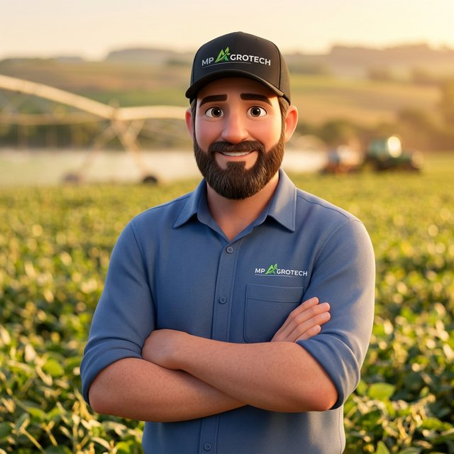

O caixa fecha, mas os números não batem com o banco?
Conciliação e fluxo de caixa integrados ao financeiro, com fechamento confiável todo dia.
Viasoft Agrotitan →Tecnologia para o agronegócio
A MP Agrotech é especialista em sistemas de gestão ERP e em tecnologia para o agronegócio. Implantamos, parametrizamos e acompanhamos sistemas de gestão para cooperativas, cerealistas, revendas e agroindústrias.
Problemas que resolvemos
São os problemas que mais encontramos em cooperativas, cerealistas, revendas e agroindústrias. Para cada um, existe um caminho.
Conciliação e fluxo de caixa integrados ao financeiro, com fechamento confiável todo dia.
Viasoft Agrotitan →Estoque por lote e localização, com movimentação registrada da entrada à expedição, para saber o que tem e onde está.
Viasoft Agrotitan e Filt →Recebimento e expedição de grãos com regras de classificação e descontos no sistema, sem retrabalho.
Viasoft Agrotitan →Precificação e rentabilidade por pedido, marca e grupo de itens, para vender sabendo quanto sobra.
Viasoft Agrotitan →Pedidos lançados no celular, mesmo sem internet, aprovados em tempo real e com histórico de cada cliente.
Viasoft CRM →Receituário e rotinas fiscais gerados direto da venda, com base fiscal atualizada.
Viasoft Filt →Consultoria de processos para usar o que o sistema já oferece e eliminar controles por fora.
Consultoria →Painéis de vendas, compras, estoque e caixa com a informação certa na hora da decisão.
Viasoft Analytics →Outsourcing com banco de horas de consultoria e suporte especializado para a sua equipe.
Outsourcing →Soluções
Acompanhamos cada solução de perto, desde o diagnóstico até o suporte depois da implantação.

Sistema de gestão criado especificamente para o agronegócio, não uma solução genérica adaptada. Atende cooperativas, cerealistas, sementeiras, agroindústrias, laticínios, revendas de insumos e fazendas.

ERP em nuvem para revendas de insumos, lojas agropecuárias e produtores rurais. Interface simples, com comandos de voz e inteligência artificial, acessível pelo computador ou pelo celular.

Gestão de relacionamento e vendas para equipes comerciais que trabalham no campo. Roda em nuvem, com aplicativo para Android e iOS que funciona até sem internet.

Ferramenta de BI que reúne os dados da empresa em painéis claros, para o gestor antecipar resultados e decidir com base em informação, não em intuição.
Implantação e consultoria
Um bom software só gera resultado quando está bem implantado e ajustado à rotina da empresa. É nesse ponto que a MP Agrotech faz a diferença.
Conduzimos a implantação do Agrotitan, Filt, CRM e Analytics do início ao fim: levantamento, parametrização, migração de dados, treinamento das equipes e acompanhamento na virada.
Consultoria especializada nos softwares Viasoft para revisar como a empresa usa o sistema, corrigir desvios e aproveitar recursos que ficaram de lado.
Serviços
Nosso modelo é consultivo. O foco é eficiência operacional, controle financeiro e crescimento sustentável.
Diagnóstico, demonstração técnica, implantação, parametrização, treinamentos e personalizações do ERP.
Mapeamento e melhoria dos processos da empresa para que o sistema reflita a operação real e gere informação confiável.
Sua empresa não tem uma equipe especializada em TI?
A MP Agrotech assume esse papel por você. Além do suporte e do atendimento especializado, oferecemos desenvolvimento de soluções sob medida e revisão de processos, para que sua equipe foque no que faz de melhor: o negócio.
Quem somos
Formada por profissionais com mais de 15 anos de experiência no mercado de software de gestão e em gestão de processos, a MP Agrotech foi fundada em 2024 para acelerar a transformação digital do agronegócio. Um de seus fundadores construiu mais de uma década de carreira na Viasoft, onde chegou à gerência nacional de vendas do segmento agro.
Especializada em softwares de gestão para o agronegócio, a empresa coloca a tecnologia a favor das empresas do segmento. Seus profissionais têm vivência real em consultoria e implantação de sistemas, e a equipe conta com desenvolvedores, analistas e suporte especializados em agro, o que torna o atendimento aos clientes mais próximo e ágil.
Nosso objetivo é cuidar da tecnologia e da gestão com segurança e proximidade, para que sua empresa se dedique ao que se propõe a fazer: entregar produtos e serviços de qualidade ao produtor rural.
Quem atendemos
Agende uma demonstração
Preencha os dados e a conversa abre direto no WhatsApp da MP Agrotech.
Perguntas frequentes
Em média, de 60 a 90 dias. O prazo exato depende do tamanho da empresa e dos módulos contratados: antes de começar, fazemos um diagnóstico e entregamos um cronograma com as etapas e a data prevista de entrada em operação.
Sim. Cadastros, saldos e históricos necessários são levantados, migrados e conferidos com a sua equipe antes da virada, para a operação começar com dados confiáveis.
As soluções Viasoft atendem cooperativas, cerealistas, sementeiras, revendas de insumos, agroindústrias, laticínios e produtores rurais. No diagnóstico indicamos a solução e os módulos que fazem sentido para a sua operação.
Sim. O Viasoft CRM tem aplicativo para Android e iOS que funciona offline e sincroniza os pedidos quando o celular volta a ter conexão.
Sim. O Viasoft Filt gera o receituário agronômico com assinatura digital, e o Viasoft Agrotitan tem portal do produtor com emissão de NFP-e.
O Viasoft Filt e o Viasoft CRM são 100% em nuvem. Para o Agrotitan, avaliamos com você o modelo mais adequado.
Os dois. Implantação, treinamentos e consultoria podem ser presenciais, remotos ou combinados, conforme a necessidade da sua equipe.
A MP Agrotech acompanha a operação depois da virada e oferece banco de horas de consultoria e suporte (Outsourcing) para ajustes, treinamentos e novas rotinas.
Sim. A consultoria de processos revisa como a empresa usa o sistema, corrige desvios e ativa recursos que ficaram de lado, sem precisar trocar de software.
Suporte e contato
Atendimento de segunda a sexta, das 8h às 18h. Fora desse horário, os clientes contam com plantão pelo contato de plantão informado pela MP Agrotech.
Dúvidas de uso, ajustes e chamados dos clientes MP Agrotech.
Demonstrações, propostas e novos módulos.
WhatsApp +55 (46) 9 9982-4472
contato@mpagrotech.net
Rua Tapajós, 435 – Centro, Pato Branco – PR

O Lauro tira as primeiras dúvidas aqui mesmo no site e passa para um especialista da MP Agrotech quando você quiser.
ou chamar no WhatsApp